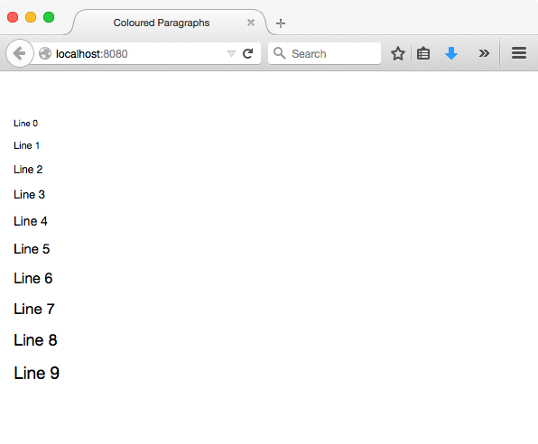
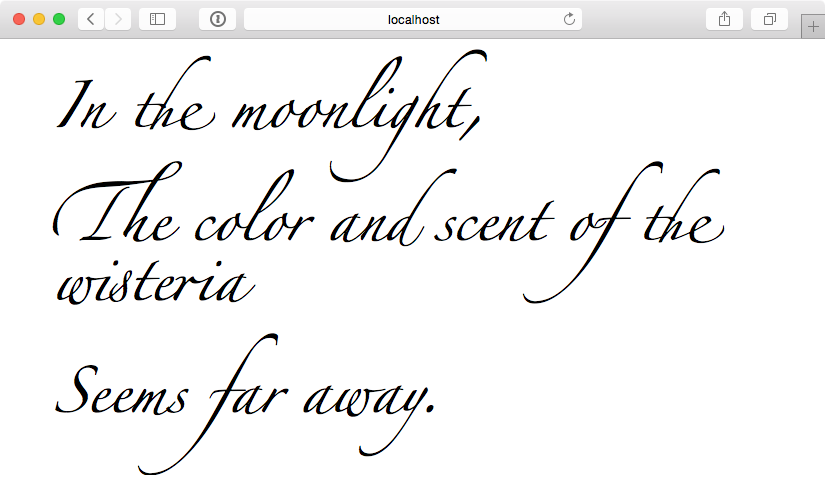

D3.js
Nick Rothwell
History Lesson
Computer Graphics
The 1970s
Tektronix TekScope 1

Storage Tubes
- Analogue vector control: no pixels
- Write-only, with reset - no 'movement'
The 1980s and Beyond

Everything is pixels.
Web Graphics
Pixels vs. Vectors
- HTML Canvas (including p5.js): drawing into a pixel-based frame
- SVG: creating structured vector-based graphical objects
Why SVG?
- Scalable, resolution-independent
- Doesn't need Javascript
- Elements are part of the DOM - can use JS libraries
Why Canvas?
- Performance
D3.js

D3.js
- JS library for manipulating the DOM (just like React)
- Document manipulation based on data
- Additional graphics support
Highlights
- jQuery-like selectors
d3.selectAll("p").style("color", "white");- Dynamic properties
d3.selectAll("p").style("color", function() {
return "hsl(" + Math.random() * 360 + ",100%,50%)";
});- Data binding
d3.selectAll("p")
.data([4, 8, 15, 16, 23, 42])
.style("font-size", function(d) { return d + "px"; });
d3.selectAll("p")
.data(["These", "are", "some", "lines", "of", "code"])
.text(function(d, i) { return "Line " + i + ": " + d; });- AJAX
d3.json('/fetch', function (error, json) {
if (error) { return console.warn(error); }
d3.selectAll("p").data(json).text(...);
});Exercise 1
Coloured Paragraphs
- The handout uses Flask to serve the main page, and a data page via AJAX
- The data is a list of RGB colours
- The paragraphs are coloured by D3.js based on this data
- The font sizes are set up by D3.js as well, based on line number
- Alter the colours: make all the lines red (easy)
- Randomise the colours
- Make the colours into random greyscale
- Alternate between two colours (evens and odds)
- Blend between two colours: from red (top) to green (bottom)
Everything here can be done in the server; the front-end doesn't change
(Template here.)
Transitions
- Animate by transition from one DOM state to another
- D3.js can interpolate from one value to another (for common data types)
- Can set delay and duration (as values or functions)
d3.selectAll("p")
.style("color", "white")
.transition()
.delay(function (d, i) { return i * 500; })
.duration(3000)
.style("color", "black");More Timing Support
- Run a function periodically using setInterval
- Delay and run a function once using setTimeout
setInterval(function () {...}, 5000);setTimeout(function () {...}, 1000);Exercise 2
Haiku Kiosk
Haiku Kiosk
- A new random haiku is served every 10 seconds
- Haikus are stored in files on the server
- The display cycle fades in a haiku line by line, and fades it out again
(Template here.)